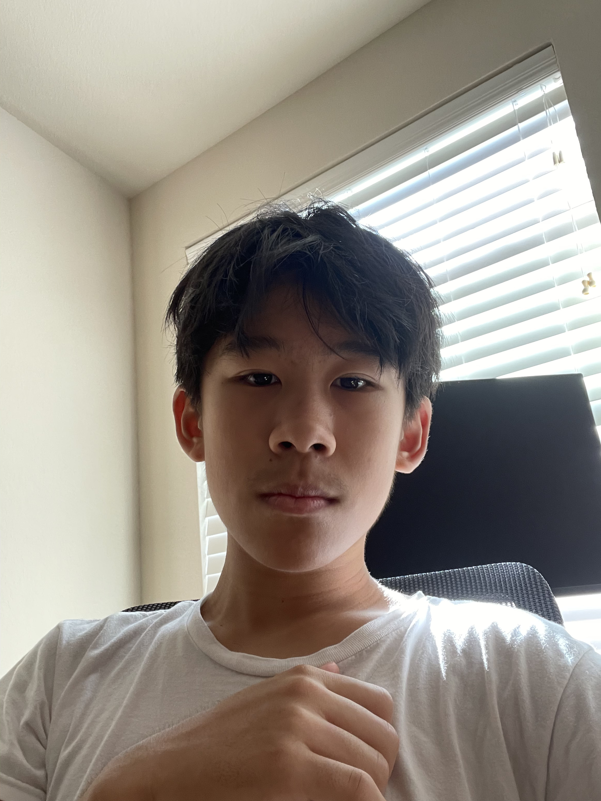
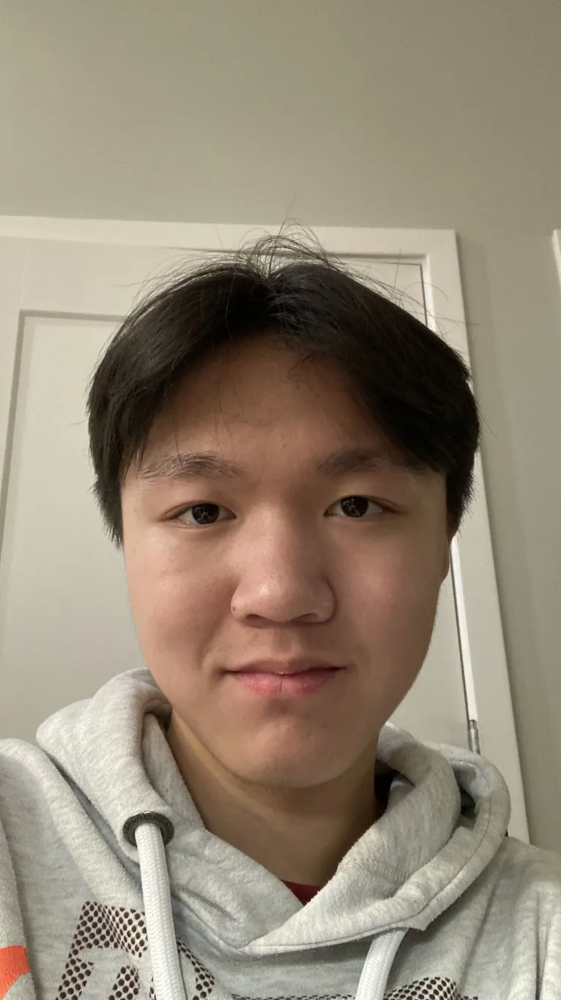
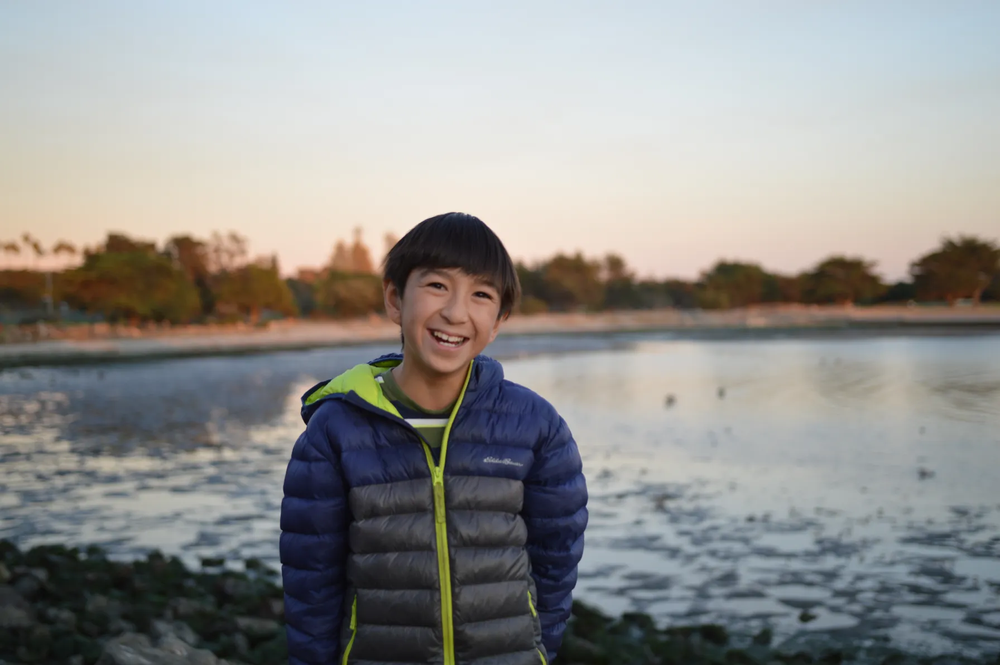
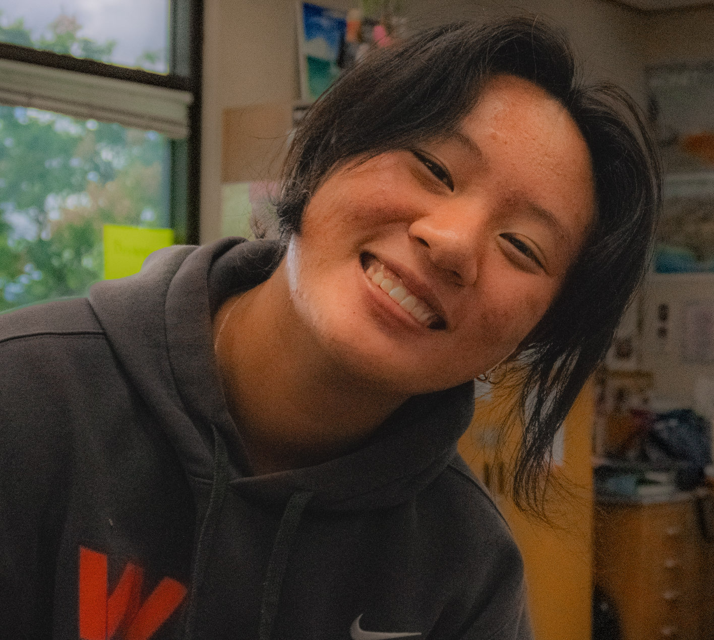

Kevin Z
Editor-in-Chief / Writer / Public Relations
Sophia
Editor-in-Chief / Writer / Public Relations

Kevin C
Managing Editor / Writer / Public Relations
Aaron
Director of Web Development / Webmaster / Writer
Annie
PR Director / Writer / Editor
Daniel
Webmaster / Writer
Wenhao
Webmaster / Writer
Harshil
Writer / Public Relations
Samairra
Writer / Public Relations
Jessica
Writer / Editor
Nico
Writer
Margaret
Editor
Ethan
Writer
Michelle
Webmaster